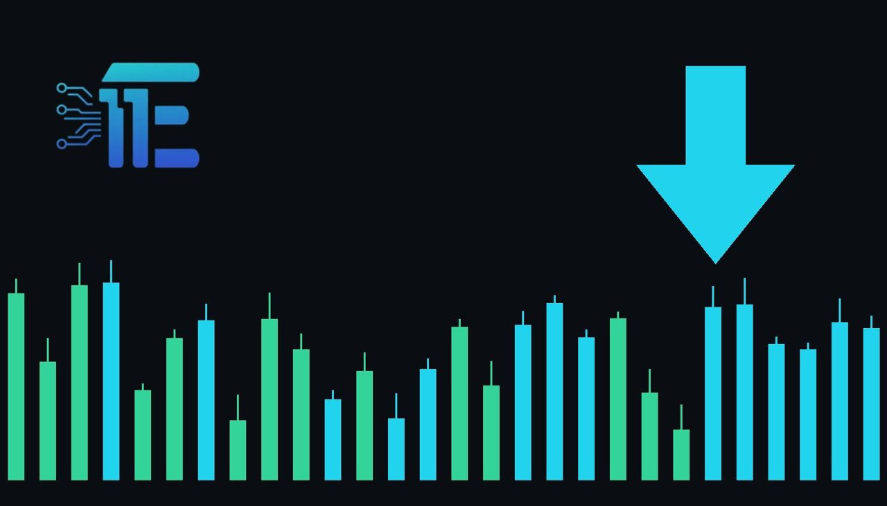

Gold Slides Below USD 3,950 as Precious Metals Weakenមាសធ្លាក់ចុះក្រោម 3950 ដុល្លារអាមេរិក ខណៈលោហៈមានតម្លៃខ្សោយជាងមុន
XAU/USD impact: ▼ Bearishផលប៉ះពាល់លើ XAU/USD: ▼ ធ្លាក់

Spot gold prices declined on Tuesday as renewed selling erased earlier recovery gains amid political developments. The drop reflects shifting safe-haven demand and broader macroeconomic sentiment.
តម្លៃមាសស្ដុតបានធ្លាក់ចុះកាលពីថ្ងៃអង្គារ ខណៈសម្ពាធលក់បានលុបបំបាត់ការកើនឡើងពីពេលមុន។ ការធ្លាក់ចុះនេះឆ្លុះបញ្ចាំងពីការផ្លាស់ប្តូរតម្រូវការទីជម្រកសុវត្ថិភាព និងអារម្មណ៍ម៉ាក្រូសេដ្ឋកិច្ច។
Gold prices declined on Tuesday, with spot gold falling and futures opening lower below the USD 4,000 threshold for the second consecutive session. Precious metals saw renewed selling pressure that erased part of the previous session's recovery gains, with early trading pushing prices down further.
តម្លៃមាសបានធ្លាក់ចុះកាលពីថ្ងៃអង្គារ ដោយតម្លៃមាសស្ដុតបានធ្លាក់ចុះ ហើយកិច្ចសន្យាអនាគតបានបើកទាបជាងកម្រិត 4000 ដុល្លារអាមេរិកសម្រាប់រយៈពេលពីរវគ្គជាប់គ្នា។ លោហៈមានតម្លៃបានជួបប្រទះនឹងសម្ពាធលក់ជាថ្មីដែលបានលុបបំបាត់ការកើនឡើងនៃការងើបឡើងវិញពីវគ្គមុន ដោយការជួបប្រទះដំបូងបានុញច្រានតម្លៃឱ្យធ្លាក់ចុះបន្ថែមទៀត។
The downward price action was driven by investors assessing multiple overlapping macroeconomic factors, including evolving US-Iran peace negotiations, shifting inflation expectations, and upcoming political events such as the US midterm elections. These developments influenced broader safe-haven demand across global markets.
សកម្មភាពតម្លៃចុះក្រោមនេះត្រូវបានជំរុញដោយអ្នកវិនិយោគដែលវាយតម្លៃលើកត្តាម៉ាក្រូសេដ្ឋកិច្ចដែលត្រួតស៊ីគ្នាជាច្រើន រួមទាំងការចរចា សន្តិភាពរវាងសហរដ្ឋអាមេរិក និងអ៊ីរ៉ង់ ការរំពឹងទុកអតិផរណាដែលផ្លាស់ប្តូរ និងព្រឹត្តិការណ៍នយោបាយនាពេលខាងមុខដូចជាការបោះឆ្នោតពាក់កណ្តាលអាណត្តិរបស់សហរដ្ឋអាមេរិក។ ការវិវត្តទាំងនេះបានជះឥទ្ធិពលដល់តម្រូវការទីជម្រកសុវត្ថិភាពទូទាំងទីផ្សារសកល។
For XAU/USD, shifts in safe-haven demand and geopolitical sentiment act as primary transmission channels alongside currency and yield fluctuations. When political tensions ease or risk appetite stabilizes, investors often reduce safe-haven allocations, weighing directly on non-yielding bullion.
សម្រាប់គូប្រាក់ XAU/USD ការផ្លាស់ប្តូរតម្រូវការទីជម្រកសុវត្ថិភាព និងអារម្មណ៍ភូមិសាស្ត្រនយោបាយគឺជាបណ្តាញបញ្ជូនសំខាន់ៗរួមជាមួយនឹងការប្រែប្រួលរូបិយប័ណ្ណ និងទិន្នផល។ នៅពេលដែលភាពតានតឹងនយោបាយស្រកចុះ ឬចំណង់ហានិភ័យមានស្ថេរភាព ដែលធ្វើឱ្យទម្ងន់ធ្ងន់ធ្ងរដោយផ្ទាល់ទៅលើមាស។
A supportive environment for gold typically involves escalating geopolitical risks, rising inflation concerns, or declining rate expectations that weaken the US dollar and real yields. Conversely, a stronger dollar, firming yields, or easing political tensions tend to pressure prices downward.
បរិយាកាសគាំទ្រសម្រាប់មាសជាទូទៅពាក់ព័ន្ធនឹងការកើនឡើងនូវហានិភ័យភូមិសាស្ត្រនយោបាយ ការព្រួយបារម្ភអំពីអតិផរណា ឬការធ្លាក់ចុះនៃការរំពឹងទុកអត្រាការប្រាក់ដែលធ្វើឱ្យដុល្លារអាមេរិក និងទិន្នផលពិតប្រាកដធ្លាក់ចុះ។ ផ្ទុយទៅវិញ ដុល្លារអាមេរិកខ្លាំងជាងមុន ទិន្នផលរឹងមាំ ឬការបន្ធូរបន្ថយភាពតានតឹងនយោបាយមានទំនោរដាក់សម្ពាធលើតម្លៃឱ្យធ្លាក់ចុះ។
Traders should monitor incoming US economic data, statements regarding political developments, and broader currency movements to gauge near-term direction.
អ្នកជួញដូរគួរតែតាមដានទិន្នន័យសេដ្ឋកិច្ចសហរដ្ឋអាមេរិកដែលចូលមក ការថ្លែងការណ៍ទាក់ទងនឹងការវិវត្តនយោបាយ និងចលនារូបិយប័ណ្ណទូលំទូលាយដើម្បីវាស់វែងទិសដៅរយៈពេលខ្លី។
Key takeawaysចំណុចសំខាន់ៗ
- Spot gold prices declined below key psychological levels amid broad precious metals selling.
- តម្លៃមាសស្ដុតបានធ្លាក់ចុះក្រោមតម្លៃចិត្តសាស្ត្រសំខាន់ៗ ខណៈដែលការលក់លោហៈមានតម្លៃមានទំហំធំ។
- Investors weighed US-Iran peace negotiations, inflation expectations, and US midterm elections.
- អ្នកវិនិយោគបានថ្លឹងថ្លែងលើការចរចាសន្តិភាពរវាងសហរដ្ឋអាមេរិក និងអ៊ីរ៉ង់ ការរំពឹងទុកអតិផរណា និងការបោះឆ្នោតពាក់កណ្តាលអាណត្តិរបស់សហរដ្ឋអាមេរិក។
- Shifting safe-haven demand and macroeconomic sentiment drove the recent price pullback.
- ការផ្លាស់ប្តូរតម្រូវការទីជម្រកសុវត្ថិភាព និងអារម្មណ៍ម៉ាក្រូសេដ្ឋកិច្ចបានជំរុញឱ្យមានការទាញតម្លៃថយក្រោយថ្មីៗនេះ។
Original commentary by THE MARKET CODE, based on public reporting from Yahoo! Finance: GC=F News. Written with the help of AI. Educational only, not financial advice.
មតិវិភាគដើមដោយ THE MARKET CODE ផ្អែកលើការរាយការណ៍សាធារណៈពី Yahoo! Finance: GC=F News។ សរសេរដោយមានជំនួយពី AI។ មាតិកាអប់រំប៉ុណ្ណោះ មិនមែនជាដំបូន្មានហិរញ្ញវត្ថុទេ។